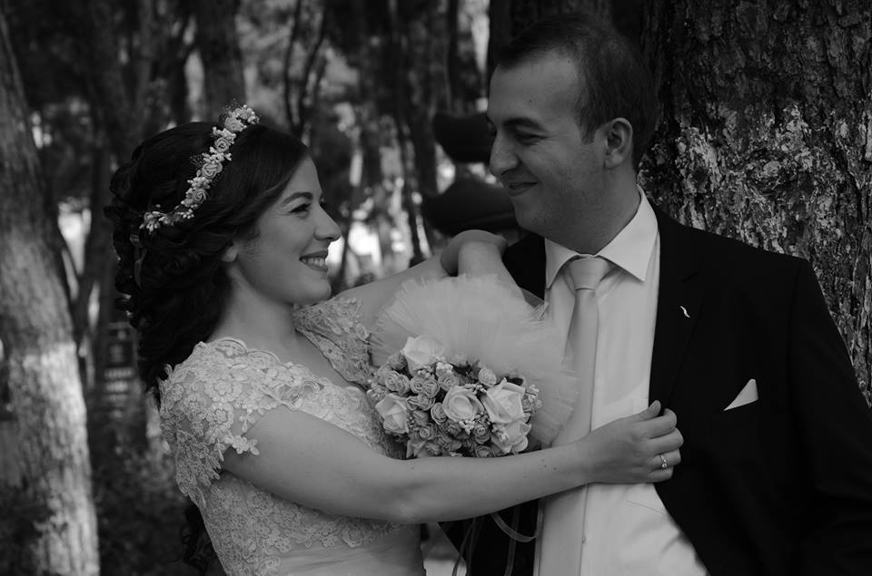

ali.orhun.org
Ali Orhun AKKİRMAN
e-posta:

...
"bilgi, paylaştıkça artar."
debian
kişisel yaşam

12 Ağustos 2010 tarihinden beri, hayatımın tamamını geçireceğim Dilek ile birlikteyim. 25 Ocak 2015 tarihinde ailelerin tanışması ve söz, 31 Temmuz 2015 tarihinde ise nişan töreni ile ilişkinin adı konmuştur.